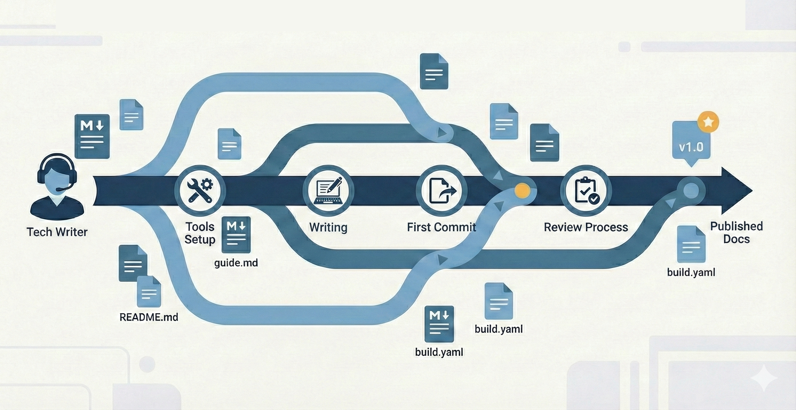

What to expect when you're expecting docs-as-code
A tech writer's field guide to Git workflows
Docs-as-code. Version control. Git workflows. Pull requests. CI/CD pipelines.
If those terms make your stomach flip, you're not alone. Many technical writers worry they need to become developers to work in docs-as-code environments. They don't.
Here's what docs-as-code actually means in practice and what your day will look like.

In this article:
- What docs-as-code means
- The toolchain: What you need
- Your typical day: Actual workflow
- The learning curve: What gets easier
- Working with other writers: Collaboration patterns
- What success looks like
- Making the transition
- The benefit nobody talks about
What docs-as-code means
Docs-as-code means treating documentation like software developers treat code:
- Files live in version control (usually Git)
- Changes go through review processes (pull requests)
- Multiple people work on the same files simultaneously
- Automated systems build and deploy your content
That's it. You're learning developer workflows, not becoming a developer.
What you get:
- Complete change history (who changed what, when, and why)
- The ability to work in parallel without stepping on each other
- Automated quality checks before content goes live
- Integration with the same systems engineers use
The toolchain: What you need
Required tools
Git - Version control system that tracks changes to your files
- Think of it as Track Changes on steroids
- Works from command line or GUI tools
- Stores complete history of every change
Text editor or IDE - Where you write
- VS Code is popular (free, extensions for everything)
- Oxygen XML Editor (powerful but pricey)
- Atom, Sublime, IntelliJ, or whatever you like
- Key feature: integration with Git
My experience: I used Oxygen XML Editor at my job, which has built-in Git integration. You could commit, push, and pull right from the editor without touching the command line. Now that I'm exploring other companies' toolchains, I'm finding VS Code with extensions gives you similar functionality for free. The adjustment is mostly learning different keyboard shortcuts.
Markdown or similar - Lightweight markup language
- Plain text with simple formatting codes
**bold**becomes bold# Headingbecomes a heading- Learn the basics in 30 minutes
XML (or similar structured markup) - More robust markup for complex documentation
- DocBook XML is common for technical documentation
- DITA (Darwin Information Typing Architecture) for modular content
- Custom XML schemas specific to your company
- More verbose than Markdown but handles complex structure better
My experience: My team used a customized version of DocBook XML, which Oxygen XML Editor handled beautifully. The verbosity takes getting used to after Markdown, but XML schemas enforce consistency and enable sophisticated content reuse. Many companies are moving toward Markdown for simplicity, but XML is still prevalent in enterprise documentation.
Common additional tools
GitHub/GitLab/Bitbucket - Web platforms for Git repositories
- Where your files live
- Where you submit changes for review
- Where you collaborate with team
- Note: Some companies use internal Git servers instead of public platforms
My experience: We had an internal Git farm (not GitHub), so everything lived behind the corporate firewall. The Git commands were identical, but the web interface was custom-built. Now I'm relearning GitHub-specific features like Actions, Projects, and the slightly different pull request workflow. The core concepts transfer completely. It's just the UI that's different.
Build tools - Systems that turn your source files into websites
- Hugo, Jekyll, Sphinx, or custom systems
- Usually configured by someone else
- You just need to know basic commands
- Critical reality check: Some builds are fast (seconds), some are slow (hours)
My experience: We had a custom build system that could take hours to fully propagate changes to the public docs site. You'd push a change in the morning and check back after lunch to see if it appeared. This meant you couldn't iterate quickly. Every change required planning. Some companies have builds that complete in seconds. Ask about this in interviews. Build speed dramatically affects your workflow and stress levels.
Static site generators - Create websites from your Markdown
- Convert your files to HTML
- Apply styling automatically
- Generate navigation and search
Your typical day: Actual workflow
Here's what working in docs-as-code actually looks like:
Morning: Sync and plan
# Update your local copy with latest changes
git pull origin main
# See what changed overnight
git log --oneline --since="yesterday"You're checking what your teammates changed while you slept. No different from checking email or Slack. Takes 30 seconds.
Mid-morning: Create your working branch
# Create a branch for your work
git checkout -b js-add-authentication-docsBranches let you work independently. You can make any changes you want without affecting anyone else. Your teammates do the same. When everyone's ready, you merge the changes together.
Branch naming tip: Prefix with your initials and use descriptive names like js-add-authentication-docs or js-DOC1234-authentication. You'll be juggling multiple branches, and good names help you find the right one quickly.
All day: Write and commit
<!-- You write in your text editor -->
<!-- In Markdown: -->
# API Authentication
To authenticate requests, include your API key in the header:
`Authorization: Bearer YOUR_API_KEY`
<!-- Or in DocBook XML: -->
<section xml:id="api-authentication">
<title>API Authentication</title>
<para>To authenticate requests, include your API key in the header:</para>
<programlisting>Authorization: Bearer YOUR_API_KEY</programlisting>
</section># Save your changes periodically
git add .
git commit -m "Add authentication section to API docs"
# Pull from main frequently to stay current
git pull origin mainCommitting is like saving versions of your Word doc, except each version has a description of what changed. You can always go back to any previous version.
Best practice: Commit often with small, meaningful changes. Pull from main throughout the day to avoid nasty merge conflicts later. The more frequently you pull and merge, the easier conflicts are to resolve.
Afternoon: Get feedback
# Push your branch to the server
git push origin js-add-authentication-docsThis is the stage where you seek feedback from technical reviewers, editors, or peer writers. The process is often iterative:
- Submit your changes for review (via pull request, change request, or shared branch).
- Reviewers (tech leads, editors, or peers) provide comments, suggestions, or edits.
- You incorporate their feedback, make revisions, and update your branch.
- Repeat the review cycle as needed until all feedback is addressed and reviewers approve the changes.
Depending on your team, this may involve multiple rounds of feedback, especially for complex or high-visibility documentation. Editors may create a separate branch for markup, or leave inline comments in your pull request. Peer review is common in larger teams, while solo writers may self-review or rely on editor feedback.
Best practice: Treat feedback as a collaborative process. Ask clarifying questions, discuss suggestions, and make sure all technical and editorial concerns are resolved before merging.
Only after all feedback is incorporated and reviewers are satisfied should you proceed to merge and deploy your changes.
End of day: Merge and deploy
Once your work is ready, you merge your branch. Your changes go live.
Automated systems:
- Run quality checks
- Build the documentation site
- Deploy to production
You watch it happen. You don't make it happen.
Important: Delete your branch immediately after merging, both locally and on the remote. Do it right then while you're thinking about it. Otherwise you'll accumulate dozens of stale branches cluttering your workspace.
# After merge, delete the branch
git branch -d js-add-authentication-docs
git push origin --delete js-add-authentication-docsThe learning curve: What gets easier
Week 1: Everything feels awkward
- You'll use cheat sheets constantly
- Every command requires looking something up
- You'll accidentally commit things you shouldn't
Month 1: Basic workflows become automatic
- Clone, branch, commit, push feels natural
- You stop panicking about merge conflicts
- You can help newer teammates
Month 3: You're spotting efficiency gains
- You know when to rebase vs. merge
- You create aliases for common commands
- You're suggesting workflow improvements
Month 6: You forget you were ever intimidated
- Git becomes invisible infrastructure
- You focus on content, not tools
- You wonder how you ever worked without it
Navigation tip: Learn the repository structure early. Know where docs live vs. code.
Working with other writers: Collaboration patterns
| Pattern | Description | Works well when | Watch out for |
|---|---|---|---|
| File-level ownership | Each writer owns specific files. You rarely edit the same file simultaneously. | Documentation is modular and clearly divided. | Shared files like navigation or configuration. |
| Topic branches | Each feature or update gets its own branch. Multiple writers can work on different branches simultaneously. | Changes are independent and don't overlap. | Long-lived branches that diverge from main. |
| Self-merge (trust model) | Writers merge their own work without peer review. Common when writers are solo owners of their documentation packages. | Writers are experienced, documentation is clearly divided, and quality is maintained through other means (style guides, automated checks). | Errors that a second pair of eyes would catch. Consider occasional spot checks or retrospective reviews. |
| Editor branch workflow | When an editor is involved, they pull down your working branch and create a new branch with their edits (like edit-your-branch-name). |
Your authoring tool supports editing markup (like Oxygen's track changes), and you want detailed editorial feedback. | Branch proliferation. Clean up edit branches after merging. |
| Review rotation | Writers review each other's pull requests on rotation. | Team size is 3-8 people and you want consistent peer accountability. | Review bottlenecks. Set expectations for response time. |
| Sync meetings | Quick daily or weekly syncs where everyone says what they're working on. | Prevents two people updating the same section without knowing. | Keep short: 15 minutes max. Just awareness, not detailed review. |
What success looks like
After three months in docs-as-code, you should:
- Clone a repository without looking up commands
- Create branches, commit changes, and push them confidently
- Review pull requests and leave meaningful comments
- Resolve simple merge conflicts independently
- Know when to ask for help vs. Google it
You won't know everything. Nobody does. Developers who've used Git for years still Google commands.
The goal isn't Git expertise. The goal is comfortable productivity.
Making the transition
If you're just starting
- Install Git and a text editor (VS Code is fine)
- Take a GitHub Skills course (free, interactive, 30 minutes)
- Practice with a personal project before touching work files
- Ask teammates for their cheat sheets (everyone has them)
- Commit early and often (small commits are easier to understand)
If you're switching platforms
Moving from one docs-as-code system to another? Here's what I'm learning:
- Core Git skills transfer perfectly - commit, branch, merge, pull, push work identically
- Platform features don't transfer - GitHub Actions ≠ my old internal build triggers
- Give yourself grace - You're not starting over, but you are learning new tools
- Your editor might change - Oxygen → VS Code means relearning keyboard shortcuts
- Build times might shock you - Hours → seconds feels magical; seconds → hours feels painful
What I wish I'd known: When I started interviewing, I undersold my Git experience because I'd only used an internal system, not GitHub. That was a mistake. Git is Git. The commands are identical. I just needed to learn GitHub's UI, which took about a week.
Questions to ask: When interviewing at new companies, ask about their review process. "Do writers merge their own work or is peer review required?" and "How are edits handled?" These answers reveal team culture, trust levels, and your actual day-to-day workflow.
If you're struggling
- You're not alone - Every writer goes through this
- GUI tools help - GitHub Desktop, Sourcetree, GitKraken make it visual
- Command line comes later - Start with GUI, graduate to terminal when ready
- Mistakes are recoverable - Almost nothing is permanent
- Your teammates want you to succeed - They've been exactly where you are
Resources that help
For Git basics:
- GitHub Skills (interactive tutorials)
- "Git for Humans" by David Demaree (book)
- Oh Shit, Git!?! (ohshitgit.com) - fixes for common mistakes
For Markdown:
- Markdown Guide (markdownguide.org)
- Your first draft (just start writing, look up syntax as needed)
For XML/DocBook:
- DocBook: The Definitive Guide (docbook.org)
- Your company's schema documentation (every implementation is different)
- Oxygen XML Editor tutorials (if you're using Oxygen)
For build tools:
- Your team's documentation (every system is different)
- README.md in your repository (usually has setup instructions)
The benefit nobody talks about
Docs-as-code gives you one thing that traditional tools don't: evidence of your work.
Your Git history becomes a portfolio. Every commit shows:
- What you changed
- Why you changed it
- How it improved the docs
When performance review comes, you have metrics. When you apply for your next job, you can point to real contributions in public repositories.
Traditional docs tools hide this evidence. Docs-as-code makes it visible.
You've got this
Docs-as-code isn't about becoming a developer. It's about using developer tools to make collaboration easier and documentation better.
The learning curve is real. But it's not steep. And the payoff (better collaboration, clearer history, automated quality checks) makes the investment worth it.
Whether you're starting fresh, switching from traditional tools, or moving between docs-as-code platforms (like I am), the fundamentals stay the same. Git is Git. The platforms just wrap different features around it.
Start small. Be patient with yourself. Ask questions.
In six months, you'll wonder why anyone still uses anything else.
A note on platform switching: If you're experienced with one docs-as-code system and worried about learning another, don't be. I spent years in an internal ecosystem with Oxygen and custom build tools. Now I'm relearning GitHub. The Git commands are identical. I'm just learning different UI buttons and platform features. Your docs-as-code experience absolutely transfers. You're just learning a new interface on skills you already have.
Looking for specific Git workflows for technical writers? Check out my post on Git hygiene for technical writers for the commands and workflows that make docs-as-code work.